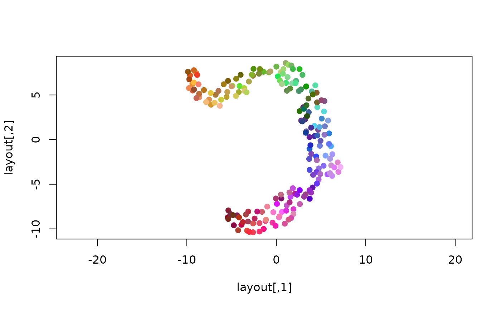
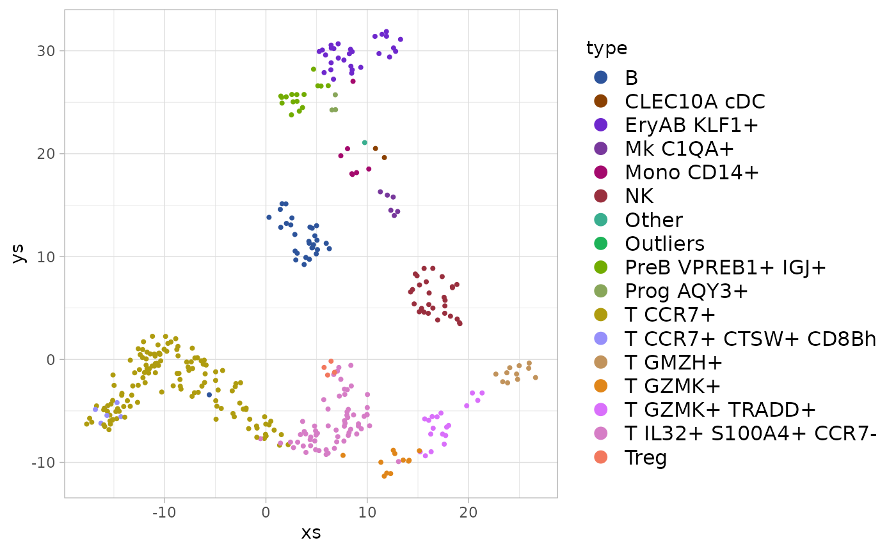

Coloring multidimensional data
Oren Ben-Kiki
2021-06-17
examples.RmdThe Problem
Suppose we have some data containing multiple variable values (measurements) for a number of elements (observations). We’d like to visualize this data, and when doing so, assign different colors to different elements.
This requires us to manually assign a color to each element, or if the data lends itself to it, compute some linear score for each element and use that as an index into a color palette. For large multidimensional data, neither approach is practical.
The package provides a quick-and-dirty solution which automatically computes a distinct color to each data element, where these colors try to reflect the “coarse” structure of the data; that is, “more similar” data elements are assigned “more similar” colors.
Seatbelts Example
We’ll demonstrate this on the seatbelt data, one of the built-in data sets provided by R. To begin, we’ll load the package and access the seatbelts data. Since the package only works on simple matrices, we’ll have to convert the seatbelts time series data to a simple matrix:
library(chameleon)
seatbelts <- matrix(as.numeric(Seatbelts), nrow=nrow(Seatbelts), ncol=ncol(Seatbelts))
colnames(seatbelts) <- colnames(Seatbelts)
dim(seatbelts)
#> [1] 192 8
head(seatbelts, 4)
#> DriversKilled drivers front rear kms PetrolPrice VanKilled law
#> [1,] 107 1687 867 269 9059 0.1029718 12 0
#> [2,] 97 1508 825 265 7685 0.1023630 6 0
#> [3,] 102 1507 806 319 9963 0.1020625 12 0
#> [4,] 87 1385 814 407 10955 0.1008733 8 0We now have a matrix with 192 elements and 8 measurements for each one. Using the function, we can assign a color to each element and use it to visualize the data, for example using a 3D UMAP projection:
colors <- data_colors(seatbelts)
library(umap)
layout <- umap(seatbelts, min_dist=0.99, random_state=123456)$layout
plot(layout, asp=1, col=colors, pch=19, cex=1)
Assuming that UMAP has indeed captured some underlying structure of the data, we can see that the chosen colors correspond well to this structure, and possibly hint at some additional structure not captured well in the 2D projection.
However, 192 colors is “a bit much”, so we can’t expect them to be very distinct from each other. We can reduce the number of colors by grouping the data elements.
For example, since the original seatbelts data is a time series, we can compute for each row the year it applies to:
years <- floor(time(Seatbelts))
unique(years)
#> [1] 1969 1970 1971 1972 1973 1974 1975 1976 1977 1978 1979 1980 1981 1982 1983
#> [16] 1984And then compute and show a color for each year:
year_colors <- data_colors(seatbelts, group=years)
plot(layout, asp=1, col=year_colors[as.character(years)], pch=19, cex=1)
legend('bottomleft', legend=names(year_colors), col=year_colors, lty=1, lwd=3, cex=0.75)We see each year’s data is spread over a large part of the projection, but not uniformly so, suggesting that while there is some year-to-year variation, it probably isn’t the right way to group this data into distinct clusters.
PBMC Example
For a more successful grouping example, we’ll use some single-cell RNA sequence (sc-RNA) data (provided as part of the package). This data contains a matrix, containing ~1.5K metacells (rows), and for each one, the UMI count (# of detected RNA molecules) for each of ~600 different “feature” genes (columns). In addition, it provides a vector of cell which were assigned to the metacells using a supervised analysis pipeline, and a 2-column matrix containing the 2D UMAP projection chosen to visualize the data (a common practice for scRNA data analysis).
data(pbmc)Let’s compute a color for each cell type. For better results, we first convert the raw UMI counts to a log of the fraction of of the total UMIs in each metacell:
fractions <- pbmc$umis / rowSums(pbmc$umis)
log_fractions <- log2(fractions + 1e-5)
type_colors <- data_colors(log_fractions, group=pbmc$types)We can then use this to color the provided 2D UMAP projection. Here we’ll use :
library(ggplot2)
frame <- as.data.frame(pbmc$umap)
frame$type <- pbmc$types
ggplot(frame, aes(x=xs, y=ys, color=type)) +
geom_point(size=0.75) +
scale_color_manual(values=type_colors) +
theme(legend.text=element_text(size=12), legend.key.height=unit(14, 'pt'))
#> Warning: Removed 39 rows containing missing values (geom_point).
Here we see that, in contrast to the seatbelt years case above, each type (group of metacells) maps to a distinct region in the 2D UMAP projection, suggesting that grouping the metacells by the type annotations does capture some significant structure of the data.
Picking distinct colors
The package also provides the lower-lever function which attempts to select a number of distinct colors, which can be directly assigned to unordered categorical data. For example:
distinct_colors(8)
#> $lab
#> l a b
#> [1,] 45.31069 16.83526 -53.526963
#> [2,] 45.31069 59.32081 -53.526963
#> [3,] 45.31069 38.07803 -16.733398
#> [4,] 45.31069 59.32081 20.060166
#> [5,] 80.00000 -68.13584 44.589209
#> [6,] 80.00000 -25.65029 -28.997920
#> [7,] 80.00000 -46.89306 7.795645
#> [8,] 80.00000 -25.65029 44.589209
#>
#> $name
#> [1] "#3E67C5" "#9C3FC6" "#9B5188" "#C6314D" "#30E36E" "#4DD6FB" "#51DDB6"
#> [8] "#B3D270"By default, this excludes low-saturation colors (with a low value in the CIELAB color space), as well as too-dark and too-light colors (with too-low or too-high value in the CIELAB color space). This can be controlled by specifying explicit , and parameters.
The convenience function wraps this to allow it to be used this as a color scale for unordered (categorical) data. For example:
ggplot(frame, aes(x=xs, y=ys, color=type)) +
geom_point(size=0.75) +
scale_color_chameleon() +
theme(legend.text=element_text(size=12), legend.key.height=unit(14, 'pt'))
#> Warning: Removed 39 rows containing missing values (geom_point).
And the similar function allows it to be used for fill colors:
ggplot(frame, aes(x=xs, y=ys, fill=type)) +
geom_point(size=0.75, shape=21, color="black", stroke=0.1) +
scale_fill_chameleon() +
theme(legend.text=element_text(size=12), legend.key.height=unit(14, 'pt'))
#> Warning: Removed 39 rows containing missing values (geom_point).Using any of these functions arbitrarily maps the colors to the values, making no attempt to have similar colors reflect similarities in the underlying data.